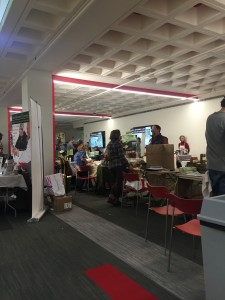
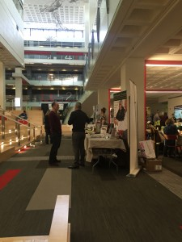
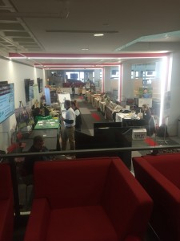

This past week, we split in two teams of two, in order to interview a variety of different stakeholders. Ben and Insiyah went to interview restaurants and grocery stores around central, seaport district, and South Boston. Jason and Husayn went to Northeastern to attend a local food festival, featuring vendors, farmers, local food producers around the Boston Area. The underlying hypothesis for this work is that CERO could benefit from fine tuning their marketing strategies to be specific to different customer segments.
These interview settings were selected based on our canvas from last class. While doing the interviews, we acted as independent students doing a class project on local food and waste management systems, and only mentioned CERO if the conversation around composting became more specific.
Food Festival Interviews:
People Interviewed: Crunch Cookies, Fox Pickling, Just Janes, Farmer’s Cow, What’s Good
Main Findings:
-
Many places wanted to further expand from local stores into like Whole Foods/Star Market. Some people only sold their products at local farmers markets.
-
No one we talked to produced that much waste → but the waste they did produce was either composted or given to pig farmers (for the most part).
-
Definitely a good place for CERO to be so they can connect with other people who are in the co-op/local farmers/etc. scene
-
One of the groups had a lot of good information about institutional/large-scale composting and how things were contracted. They also mentioned a company that sounded really similar to what Cero was doing. Also mentioned that Brandeis (I think — maybe some other northeast college) made their own composting system. Pretty interesting — was significantly cheaper than the system a company called O2 offered.
Restaurant/grocery store interviews:
Locations scouted: Harvest Coop, Thelonious Monkfish, Veggie Galaxy, Whole Foods, Legal Harborside, Mortons Steakhouse, Salvatore’s, Rosa Mexicano Ristorante, Sportello
Main findings:
-
Willingness of managers to talk to us varied to a large degree. Managers at Thelonious Monkfish and Legal Harborside refused to talk to us (Legal said that we would have to go through their corporate department to get any information at all). Some places in the Seaport District that we expected would not engage at all us actually did, including Morton’s Steakhouse, Salvatore’s and Rosa Mexicano Ristorante.
-
The big/fancy restaurants near the Seaport didn’t really think that green cred is a big deal for them, suspecting that their customers might not care if they composted. We did however find that many of them do compost as required by their rental contracts. We would have to contact building managers to get more information about who they use for composting, but it is possible that the newer buildings on this stretch are under stricter city control/watch.
-
Veggie Galaxy’s manager was really forthcoming; though they don’t compost, they produce a huge amount of waste and would potentially be a great lead for CERO.
-
Whole Foods’ manager was also super helpful. All Whole Foods in this region use Save that Stuff, a competitor of CERO. Whole Foods only has regional contracts and she suspects that when the decision to compost was made, Save that Stuff was the only company large enough to take the contract.
We are hoping to discuss the interviews in more detail as a group soon. This was a fascinating exercise, and we hope it can lead to some tangible results for CERO.
Pictures of the food festival below.
  

{kind=link}
{kind=link}
{kind=link}